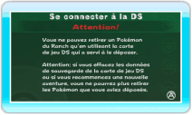
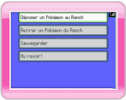
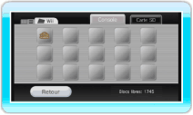

13 |
Se connecter à la DS |
 |
Vous pouvez déposer ou retirer des Pokémon que vous avez capturés ou échangés dans Pokémon Diamant ou Pokémon Perle en utilisant votre console Nintendo DS.

Ecran Wii Si vous sélectionnez SE CONNECTER A LA DS dans le menu principal de My Pokémon Ranch, l’écran ci-contre s’affiche. Quand l’écran Wii ci-dessous s’affiche, allumez votre console Nintendo DS après y avoir inséré la carte DS Pokémon Diamant ou Pokémon Perle. Sélectionnez SE CONNECTER A LA Wii dans le menu principal de Pokémon Diamant ou Pokémon Perle.
Une fois la connexion avec la console Nintendo DS établie, les écrans ci-dessous apparaissent sur les consoles respectives. Pour procéder aux étapes suivantes, utilisez votre console Nintendo DS. Lors de votre première connexion à la console Nintendo DS, vous devez choisir, parmi vos Mii, un responsable de Pokémon sur votre console Wii (voir la section Note: vous pouvez changer de responsable à n’importe quel moment.

Ecran DS Le menu principal s’affiche sur votre console Nintendo DS. Faites votre choix et validez avec Menu principal sur la DS
Pour savoir comment utiliser la connexion à la Nintendo DS après cette étape, lisez les sections "14. Déposer un Pokémon" et "15. Retirer un Pokémon".

Ecran Wii ● Pokémon déposés Les données du Ranch sont sauvegardées sur la console Wii. Vous pouvez les voir en chargeant l’écran de gestion des données. Note: si vous effacez vos données de sauvegarde, tous les Pokémon déposés seront également effacés et ne pourront par conséquent plus être retirés. Les données effacées ne peuvent plus être restaurées. |
 .
. |
 |
 |